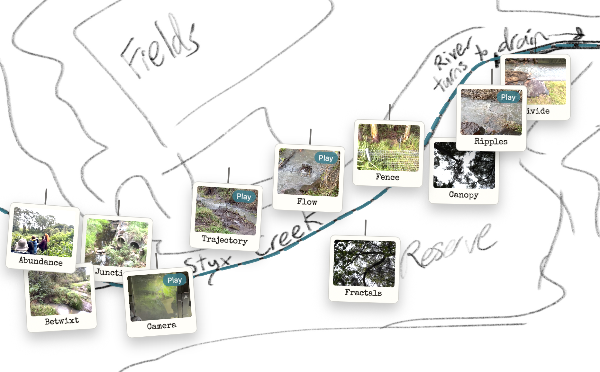

FieldNote 001


The Result
Public link: https://craigwrenasmir.github.io/FutureCreek/
The Goal
The task was to turn a hand-drawn map of Styx Creek into the actual website interface, then attach real photos and short videos to specific map locations.
The site needed to be public, lightweight, and editable over time. It also needed to feel designed, not like a temporary prototype full of default markers.
The challenge was not just coding interactions. It required precise visual alignment between a drawn creek line and clickable map behaviour, then consistent handling of mixed media types and metadata.
Each fix could break another interaction. Without a structured conversation strategy, this quickly becomes slow trial-and-error that busy educators usually do not have time for.
Conversation Strategy
- Constrain the goal: lock the map file as non-negotiable and define GitHub Pages as the delivery target.
- Request a minimal working version: map base, clickable points, and a working media viewer before styling.
- Calibrate precision: add a temporary creek-path calibration mode, then lock the captured coordinates.
- Separate structure from content: move media into structured data so placement and metadata can be edited safely.
- Refine experience in layers: elevate from dots to card-based pins, unify photo/video behaviour, then tune copy.
Dialogue Excerpt
- CraigI’ve drawn a map of Styx Creek and I want that drawing to be a website that I then put photos and videos I've taken of the area onto. I have no idea how we're going to do this.
- Code AII’ll build a lightweight first version on GitHub Pages with clickable points and a media viewer.
- CraigThe map file is Map.jpg in Downloads. See how you go.
- Code AII’ll use that exact file as the foundation and wire everything around it.
- CraigI can see you've added an animated dotted creek path. That's a cool idea, but it isn’t following my river line closely enough.
- Code AII’ll add calibration mode so you can click the true line and lock those coordinates.
- CraigGreat, that solved it. I want to add my photos and .mov files now.
- Code AII’ll convert .mov to .mp4 for browser compatibility and import everything safely.
- CraigHow do I place each item accurately on the map?
- Code AII’ll add private placement mode and output one JSON file of x/y coordinates.
- CraigExcellent. I've got extra images on there that I don't need, I haven't placed them on the map. Remove anything not intentionally placed.
- Code AII’ll keep only curated entries and remove defaults so the archive is intentional.
- CraigCan we add an Acknowledgement of Country pop-up? I'll give you the text for our local area.
- Code AIYes. I’ll patch and add a first-visit acknowledgement modal. All done.
Infrastructure Notes
Reusable Pattern
You could use this pattern to…
- build interactive local history maps with geolocated student media.
- create revision maps where each location opens short concept explainers.
- document place-based learning projects with publishable evidence trails.
- turn static school resources into navigable visual dashboards.
- prototype differentiated archives where media, captions, and structure can evolve safely.